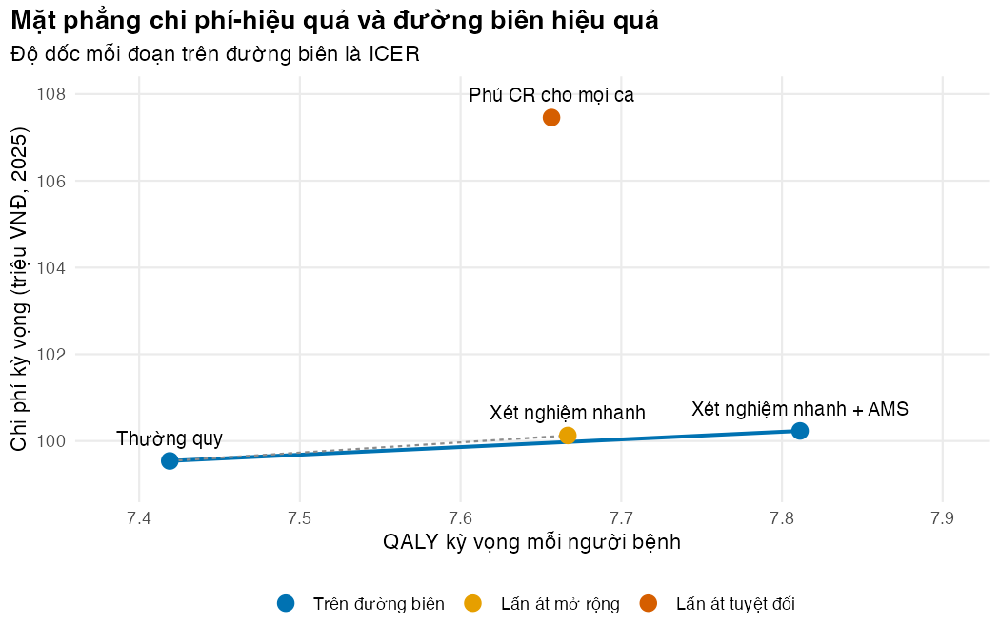

Bài 3: Quy tắc ra quyết định: ICER, lấn át, đường biên hiệu quả, NMB và NHB
So sánh đúng khi có từ ba chiến lược trở lên, và đọc kết quả bằng lợi ích ròng
Vì sao bạn nên quan tâm?
Hội đồng thuốc và điều trị của một bệnh viện tuyến trung ương họp để chọn cách xử trí người bệnh ICU nghi nhiễm khuẩn Gram âm. Một ngày colistin có giá khoảng 3.64 triệu VNĐ, bằng khoảng 15 ngày lương tối thiểu vùng I; một ngày ceftazidim/avibactam khoảng 8.6 triệu VNĐ (Bệnh viện Trung ương Thái Nguyên 2023; Bệnh viện Đa khoa khu vực Củ Chi 2024; Chính phủ 2025). Phủ colistin cho mọi ca nghĩa là người không kháng cũng có thể phải dùng thuốc không cần thiết trong lúc chờ kháng sinh đồ: nếu chờ 3 ngày (giả định minh họa), mỗi người tốn thêm khoảng 10.9 triệu VNĐ, kèm nguy cơ độc thận. Trên bàn có bốn phương án, và nếu so từng phương án với thường quy, cả ba phương án mới đều trông “đáng tiền”. Bài này giúp bạn chọn đúng một phương án khi có nhiều lựa chọn cùng lúc.
Mục tiêu học tập
Sau bài này, bạn có thể:
Tính và diễn giải ICER giữa hai chiến lược, và đọc bốn góc phần tư của mặt phẳng chi phí-hiệu quả.
Nhận diện lấn át tuyệt đối (dominance) và lấn át mở rộng (extended dominance), rồi dựng đường biên hiệu quả (efficiency frontier) cho từ ba chiến lược trở lên.
Tính lợi ích ròng quy ra tiền (NMB) và lợi ích sức khỏe ròng (NHB), và chứng minh chúng chọn cùng chiến lược với quy tắc đường biên.
Kiểm tra hàm đường biên bằng stopifnot().
Ý chính
\(\text{ICER} = \Delta C / \Delta E\): chi phí phải bỏ thêm cho mỗi đơn vị sức khỏe có thêm. ICER chỉ diễn giải được khi \(\Delta C\) và \(\Delta E\) cùng dấu: ở góc Đông Bắc, chấp nhận khi ICER < \(\lambda\); ở góc Tây Nam (rẻ hơn, kém hơn), chấp nhận phương án rẻ hơn khi ICER > \(\lambda\).
Lấn át tuyệt đối: một chiến lược đắt hơn mà không hiệu quả hơn một chiến lược khác thì bị loại.
Lấn át mở rộng: một chiến lược bị loại khi phối hợp hai chiến lược lân cận cho cùng hiệu quả với chi phí thấp hơn. Dấu hiệu: ICER của nó cao hơn ICER của chiến lược hiệu quả hơn kế tiếp (Cantor 1994).
Khi có từ ba chiến lược trở lên, không so từng chiến lược với thường quy. Phải dựng đường biên hiệu quả rồi tính ICER giữa các chiến lược kề nhau trên đường biên.
Ở ngưỡng \(\lambda\), chọn chiến lược có \(\text{NMB} = \lambda E - C\) lớn nhất, hoặc tương đương \(\text{NHB} = E - C/\lambda\) lớn nhất (Stinnett và Mullahy 1998).
Không báo cáo ICER âm: một ICER âm có thể là “rẻ hơn và tốt hơn” hoặc “đắt hơn và tệ hơn”. Hãy gọi đúng tên lấn át, hoặc dùng NMB (Paulden 2020).
Trong ví dụ, mọi chiến lược đều có ICER so với thường quy dưới ngưỡng của khóa học. Dù vậy, đường biên chỉ gồm thường quy và xét nghiệm nhanh kèm AMS.
Nội dung
ICER và mặt phẳng chi phí-hiệu quả
Đặt chênh lệch hiệu quả \(\Delta E\) trên trục hoành và chênh lệch chi phí \(\Delta C\) trên trục tung, ta có mặt phẳng chi phí-hiệu quả (cost-effectiveness plane) với bốn góc phần tư:
Góc
\(\Delta E\)
\(\Delta C\)
Kết luận
Đông Nam
> 0
< 0
Phương án mới lấn át: tốt hơn và rẻ hơn
Tây Bắc
< 0
> 0
Phương án mới bị lấn át: tệ hơn và đắt hơn
Đông Bắc
> 0
> 0
Cần ICER và ngưỡng
Tây Nam
< 0
< 0
Rẻ hơn nhưng tệ hơn; cần ICER và ngưỡng (đọc ngược chiều)
ICER là độ dốc của đoạn thẳng nối hai chiến lược. Từ năm 1977, tỷ số chi phí ròng trên lợi ích sức khỏe ròng đã được dùng làm chỉ số để xếp thứ tự ưu tiên (Weinstein và Stason 1977).
Cái bẫy khi có nhiều chiến lược
Ví dụ có bốn chiến lược. Nếu so từng chiến lược với thường quy, ta có ba ICER: xét nghiệm nhanh 2.36 triệu VNĐ/QALY, xét nghiệm nhanh kèm AMS 1.76 triệu, phủ kháng carbapenem (CR) cho mọi ca 33.33 triệu. Cả ba đều dưới ngưỡng của khóa học, 125.5 triệu VNĐ/QALY (1 lần GDP bình quân đầu người, Bài 4). Nhưng mỗi người bệnh chỉ nhận một chiến lược: câu hỏi đúng là chiến lược nào đáng bỏ thêm tiền so với chiến lược tốt kế tiếp.
Dựng đường biên hiệu quả
Thuật toán gồm bốn bước:
Sắp xếp các chiến lược theo chi phí tăng dần.
Loại chiến lược bị lấn át tuyệt đối: có chiến lược khác rẻ hơn (hoặc bằng) mà hiệu quả hơn (hoặc bằng). Phủ CR cho mọi ca đắt hơn xét nghiệm nhanh kèm AMS (107.46 so với 100.23 triệu VNĐ) nhưng ít QALY hơn. Nguyên nhân là toàn bộ 69.8% người bệnh không kháng carbapenem cũng phải dùng colistin và chịu nguy cơ độc thận. Kết luận này phụ thuộc chất lượng xét nghiệm: phủ CR cho mọi ca chỉ còn bị lấn át tuyệt đối khi độ nhạy hiệu dụng của xét nghiệm (cov_cr × độ nhạy) trên 0.58; mức cơ sở là 0.95 (chunk l03-cover-all).
Tính ICER giữa các chiến lược còn lại, kề nhau. Nếu ICER giảm khi đi sang chiến lược đắt hơn, chiến lược ở giữa bị lấn át mở rộng. Loại nó, rồi tính lại.
Các chiến lược còn lại tạo thành đường biên hiệu quả. ICER tăng dần dọc theo đường biên.
Xét nghiệm nhanh đơn thuần bị lấn át mở rộng. Nếu áp dụng xét nghiệm nhanh kèm AMS cho 63.2% người bệnh và thường quy cho số còn lại, ta đạt đúng số QALY của xét nghiệm nhanh đơn thuần. Chi phí của phương án phối hợp chỉ là 99.98 triệu VNĐ, thay vì 100.13 triệu. Kết luận này phụ thuộc hai xác suất hành động minh họa (act_no_ams, act_ams; Bài tập 2), nên đây là ví dụ phương pháp, không phải khuyến nghị chính sách. Chiều hướng, tức AMS làm xét nghiệm có lợi hơn, cùng hướng với tổng quan trên nhiễm khuẩn huyết nói chung: lợi ích tử vong của xét nghiệm phân tử nhanh rõ khi có chương trình quản lý sử dụng kháng sinh, chưa chứng minh được khi không có (Timbrook và c.s. 2017).
Lấn át mở rộng giả định có thể “chia” chiến lược cho các nhóm người bệnh, tức một phần người bệnh nhận chăm sóc kém hơn: một đánh đổi về công bằng (Cantor 1994).
Sau hai bước loại, đường biên chỉ còn thường quy và xét nghiệm nhanh kèm AMS. ICER đúng của xét nghiệm nhanh kèm AMS là 1.76 triệu VNĐ/QALY (Hình 10.1).
Lợi ích ròng: NMB và NHB
Biết ngưỡng \(\lambda\), ta có thể quy mỗi chiến lược về một con số:
\[
\text{NMB} = \lambda \cdot E - C, \qquad \text{NHB} = E - \frac{C}{\lambda}.
\]
NMB đo bằng tiền, NHB đo bằng QALY; NHB là NMB chia cho \(\lambda\). Chiến lược tốt nhất là chiến lược có NMB (hay NHB) lớn nhất. Không cần sắp xếp hay loại trừ, và không gặp vấn đề ICER âm (Stinnett và Mullahy 1998; Paulden 2020). Ở ngưỡng của khóa học, xét nghiệm nhanh kèm AMS có NMB cao nhất (880.1 triệu VNĐ). Quy tắc đường biên cũng chọn đúng chiến lược này: đó là chiến lược có ICER lớn nhất mà vẫn dưới ngưỡng. NMB còn là nền tảng của phân tích bất định ở M03.
NMB tuyệt đối không có ý nghĩa riêng; chỉ chênh lệch NMB giữa các chiến lược mới quan trọng.
# All three look "below the threshold" when each is compared only with usual careall_below <-all(pairwise$icer_vs_usual *1e6< p$wtp)all_below
[1] TRUE
stopifnot(all_below) # the prose says so; fail loudly if parameters change this
Hàm efficiency_frontier() trong code/model.R làm đúng bốn bước ở trên: vòng lặp đôi kiểm tra lấn át tuyệt đối, vòng repeat loại lấn át mở rộng cho đến khi ICER tăng dần. Các kiểm tra cuối chunk độc lập với hàm: trên lưới ngưỡng rất mịn, các chiến lược từng có NMB cao nhất đúng bằng tập trên đường biên; và một “xét nghiệm” miễn phí có độ nhạy 1, độ đặc hiệu 0 phải cho đúng kết quả của phủ CR cho mọi ca.
# The correct procedure: drop strongly dominated, then extendedly dominated# strategies, then compute ICERs between neighbours on the frontierfr <-efficiency_frontier(res$strategy, res$cost, res$qaly)fr_print <- frfr_print$cost <-round(fr_print$cost /1e6, 3)fr_print$effect <-round(fr_print$effect, 4)fr_print$icer <-round(fr_print$icer /1e6, 3)fr_print
strategy cost effect status icer
1 usual 99.541 7.4190 frontier NA
2 rdt 100.127 7.6667 ext_dominated NA
3 rdt_ams 100.232 7.8112 frontier 1.762
4 cover_all 107.458 7.6566 dominated NA
# Frontier checks. (1) Statuses the prose relies on. (2) Independent test: over a fine# grid of thresholds, the strategies that ever maximize NMB are exactly the frontier set.stopifnot(fr$status[fr$strategy =="cover_all"] =="dominated", fr$status[fr$strategy =="rdt"] =="ext_dominated")# The prose compares cover-all with rapid test + AMS: dearer and fewer QALYsstopifnot(res["cover_all", "cost"] > res["rdt_ams", "cost"], res["cover_all", "qaly"] < res["rdt_ams", "qaly"])k_check <-seq(0, 5* p$wtp, length.out =2001)ever_best <-unique(sapply(k_check, function(k) best_strategy(res, k)))frontier_set <- fr$strategy[fr$status =="frontier"]c(ever_best =paste(sort(ever_best), collapse =", "), frontier =paste(sort(frontier_set), collapse =", "))
Mặt phẳng chi phí-hiệu quả với chi phí và QALY tuyệt đối. Đường liền là đường biên; đường đứt là phép so sánh gây hiểu lầm giữa xét nghiệm nhanh đơn thuần và thường quy.
# Cost-effectiveness plane: absolute costs and QALYs, frontier as a lineplane <-data.frame(strategy = res$strategy, label = res$label,cost = res$cost /1e6, qaly = res$qaly,status = fr$status[match(res$strategy, fr$strategy)])status_vi <-c(frontier ="Trên đường biên", ext_dominated ="Lấn át mở rộng",dominated ="Lấn át tuyệt đối")plane$status_vi <-factor(status_vi[plane$status], levels = status_vi)front_line <- plane[plane$status =="frontier", ]front_line <- front_line[order(front_line$cost), ]fig_plane <-ggplot(plane, aes(qaly, cost)) +geom_line(data = front_line, colour = pal_course[1], linewidth =0.9) +# dashed: the misleading pairwise comparison of "rdt" with usual careannotate("segment", x = res["usual", "qaly"], y = res["usual", "cost"] /1e6,xend = res["rdt", "qaly"], yend = res["rdt", "cost"] /1e6,linetype ="22", colour ="grey55") +geom_point(aes(colour = status_vi), size =3.5) +geom_text(aes(label = label), vjust =-1.1, size =3.4) +scale_colour_manual(values = pal_course[c(1, 4, 2)], name =NULL) +scale_x_continuous(expand =expansion(mult =c(0.15, 0.3))) +scale_y_continuous(expand =expansion(mult =0.12)) +labs(x ="QALY kỳ vọng mỗi người bệnh", y ="Chi phí kỳ vọng (triệu VNĐ, 2025)",title ="Mặt phẳng chi phí-hiệu quả và đường biên hiệu quả",subtitle ="Độ dốc mỗi đoạn trên đường biên là ICER") +theme_course()save_fig(fig_plane, "l03-frontier.png")

Hình 1: Mặt phẳng chi phí-hiệu quả: chỉ hai chiến lược nằm trên đường biên. Độ dốc đường đứt (ICER của xét nghiệm nhanh so với thường quy) lớn hơn độ dốc đường biên.
Tính NMB và NHB ở ngưỡng của khóa học; ba cách chọn (NMB, NHB, đường biên) phải cho cùng một chiến lược.
# Net benefit at the course threshold (1 x GDP per capita): one number per strategy, pick the largestnb_tab <-data.frame(strategy = res$strategy,nmb_million = res$nmb /1e6,nhb_qaly = res$nhb)nb_tab[, -1] <-round(nb_tab[, -1], 4)nb_tab
best_nmb <- res$strategy[which.max(res$nmb)]best_nhb <- res$strategy[which.max(res$nhb)]# Frontier rule: the frontier strategy with the largest ICER still below the thresholdfr_ok <- fr[fr$status =="frontier"& (is.na(fr$icer) | fr$icer <= p$wtp), ]best_frontier <- fr_ok$strategy[nrow(fr_ok)]c(nmb = best_nmb, nhb = best_nhb, frontier = best_frontier)
nmb nhb frontier
"rdt_ams" "rdt_ams" "rdt_ams"
stopifnot(best_nmb == best_nhb, best_nmb == best_frontier, best_nmb =="rdt_ams") # the prose names rapid test + AMS
Tìm độ nhạy hiệu dụng mà dưới đó phủ CR cho mọi ca thôi bị lấn át tuyệt đối (QALY hai chiến lược bằng nhau).
# How good must the test be before cover-all stops being strongly dominated? Cover-all is# dominated by rapid test + AMS while its QALYs are lower; find the effective sensitivity# (cov_cr x sens_rdt) at which the two QALYs are equalqaly_gap <-function(se_eff) { q <-modifyList(p, list(cov_cr =1, sens_rdt = se_eff)) r <-run_tree(q) r["rdt_ams", "qaly"] - r["cover_all", "qaly"]}se_cover_all <-uniroot(qaly_gap, lower =0.3, upper =0.999, tol =1e-10)$rootround(c(effective_sensitivity_base = p$cov_cr * p$sens_rdt, threshold = se_cover_all), 3)
effective_sensitivity_base threshold
0.950 0.577
stopifnot(p$cov_cr * p$sens_rdt > se_cover_all)
Mẹo thực hành
Vẽ mặt phẳng chi phí-hiệu quả trước khi đọc bảng ICER: mắt phát hiện lấn át nhanh hơn bảng số.
Trình bày bảng theo chi phí tăng dần, có cột “trạng thái” (trên đường biên, lấn át tuyệt đối, lấn át mở rộng).
Lỗi thường gặp
So mọi chiến lược với một chiến lược nền rồi chọn ICER thấp nhất. Cách phát hiện: chiến lược được chọn có nằm trên đường biên không?
Báo cáo ICER âm như một con số bình thường. Hàm tính ICER nên trả NA kèm nhãn “lấn át” khi \(\Delta C\) và \(\Delta E\) trái dấu.
Chọn ICER thấp nhất thay vì ICER lớn nhất mà vẫn dưới ngưỡng. ICER thấp chỉ cho biết đáng tiền, chưa cho biết tốt nhất.
Quên tính lại sau khi loại một chiến lược lấn át mở rộng: lặp đến khi ICER tăng đều.
Bài tập
Bài 1 (dễ). Dựng đường biên với kết cục là số ca tử vong tránh được. Chi phí cho mỗi ca tránh được của xét nghiệm nhanh kèm AMS là bao nhiêu?
Lời giải
Trạng thái các chiến lược không đổi. ICER là 21.8 triệu VNĐ cho mỗi ca tránh được: dễ truyền đạt cho bác sĩ, nhưng không so được giữa các bệnh.
# Exercise 1: frontier with deaths averted as the effect (cost per death averted)fr_death <-efficiency_frontier(res$strategy, res$cost, -res$death)# Same statuses as with QALYs (the prose says so)stopifnot(identical(fr_death$status[match(fr$strategy, fr_death$strategy)], fr$status))fr_death$icer <-round(fr_death$icer /1e6, 2)fr_death[, c("strategy", "status", "icer")]
strategy status icer
1 usual frontier NA
2 rdt ext_dominated NA
3 rdt_ams frontier 21.83
4 cover_all dominated NA
Bài 2 (trung bình). Giả sử bác sĩ hành động theo 90% kết quả dương tính ngay cả khi không có AMS. Xét nghiệm nhanh đơn thuần có còn bị lấn át mở rộng không?
Lời giải
Không. Xét nghiệm nhanh đơn thuần lên đường biên với ICER 1.33 triệu VNĐ/QALY so với thường quy; xét nghiệm nhanh kèm AMS có ICER 9.62 triệu so với xét nghiệm nhanh đơn thuần. Trạng thái lấn át phụ thuộc tham số, nên phải kiểm tra lại đường biên trong mọi phân tích độ nhạy.
# Exercise 2: if clinicians acted on 90% of positive results without AMS supportq <- pq$act_no_ams <-0.90res_q <-run_tree(q)fr_q <-efficiency_frontier(res_q$strategy, res_q$cost, res_q$qaly)# With 90% action, rapid test alone is no longer extendedly dominated (the prose says so)stopifnot(fr_q$status[fr_q$strategy =="rdt"] =="frontier")fr_q$icer <-round(fr_q$icer /1e6, 3)fr_q[, c("strategy", "status", "icer")]
strategy status icer
1 usual frontier NA
2 rdt frontier 1.326
3 rdt_ams frontier 9.621
4 cover_all dominated NA
Bài 3 (khó). Lặp lại phân tích với DALY tránh được làm kết cục. Thứ hạng có đổi không? Vì sao ICER theo DALY thấp hơn theo QALY (gợi ý: Bài 2)?
Lời giải
Thứ hạng giữ nguyên. ICER là 1.14 triệu VNĐ/DALY tránh được, thấp hơn ICER theo QALY vì mẫu số lớn hơn: DALY của mô hình không trừ chất lượng sống sau ra viện (Bài 2).
# Exercise 3: the same ranking with DALYs averted as the effectfr_daly <-efficiency_frontier(res$strategy, res$cost, -res$daly)# Same statuses as with QALYs (the prose says so), and a lower ICER per DALY than per QALYstopifnot(identical(fr_daly$status[match(fr$strategy, fr_daly$strategy)], fr$status), fr_daly$icer[fr_daly$strategy =="rdt_ams"] < fr$icer[fr$strategy =="rdt_ams"])fr_daly$icer <-round(fr_daly$icer /1e6, 3)fr_daly[, c("strategy", "status", "icer")]
strategy status icer
1 usual frontier NA
2 rdt ext_dominated NA
3 rdt_ams frontier 1.138
4 cover_all dominated NA
Cantor, S B. 1994. “Cost-effectiveness analysis, extended dominance, and ethics: a quantitative assessment”. Medical decision making : an international journal of the Society for Medical Decision Making 14 (3): 259–65. https://doi.org/10.1177/0272989X9401400308.
Stinnett, A A, và J Mullahy. 1998. “Net health benefits: a new framework for the analysis of uncertainty in cost-effectiveness analysis”. Medical decision making : an international journal of the Society for Medical Decision Making 18 (2 Suppl): S68–80. https://doi.org/10.1177/0272989X98018002S09.
Timbrook, Tristan T, Jacob B Morton, Kevin W McConeghy, Aisling R Caffrey, Eleftherios Mylonakis, và Kerry L LaPlante. 2017. “The Effect of Molecular Rapid Diagnostic Testing on Clinical Outcomes in Bloodstream Infections: A Systematic Review and Meta-analysis”. Clinical infectious diseases : an official publication of the Infectious Diseases Society of America 64 (1): 15–23. https://doi.org/10.1093/cid/ciw649.
Weinstein, M C, và W B Stason. 1977. “Foundations of cost-effectiveness analysis for health and medical practices”. The New England journal of medicine 296 (13): 716–21. https://doi.org/10.1056/NEJM197703312961304.
Kịch bản video (~14 phút)
#
Slide
Lời giảng chính
Hình/Code
1
Từ hai đến nhiều chiến lược
Hội đồng thuốc và điều trị: colistin, ceftazidim/avibactam, xét nghiệm nhanh; hiếm khi chỉ có “mới” và “cũ”
Hộp “Vì sao bạn nên quan tâm?”
2
ICER
ΔC/ΔE; độ dốc; chỉ dùng ở góc Đông Bắc và Tây Nam
Công thức
3
Mặt phẳng chi phí-hiệu quả
Bốn góc phần tư; lấn át tuyệt đối
Bảng góc phần tư
4
Cái bẫy
Ba ICER so với thường quy đều “dưới ngưỡng”
Chunk l03-pairwise
5
Lấn át tuyệt đối
Phủ CR cho mọi ca: đắt hơn và ít QALY hơn
Chunk l03-frontier
6
Lấn át mở rộng
Phối hợp hai chiến lược lân cận rẻ hơn ở cùng QALY
Chunk l03-extended-mix
7
Đường biên hiệu quả
Bốn bước; ICER tăng dần; vẽ hình
figs/l03-frontier.png
8
Ví dụ phương pháp, không phải khuyến nghị
Kết luận phụ thuộc xác suất bác sĩ hành động và độ nhạy; công bằng khi phối hợp